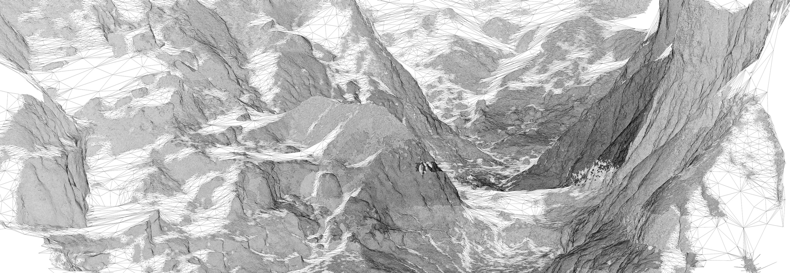
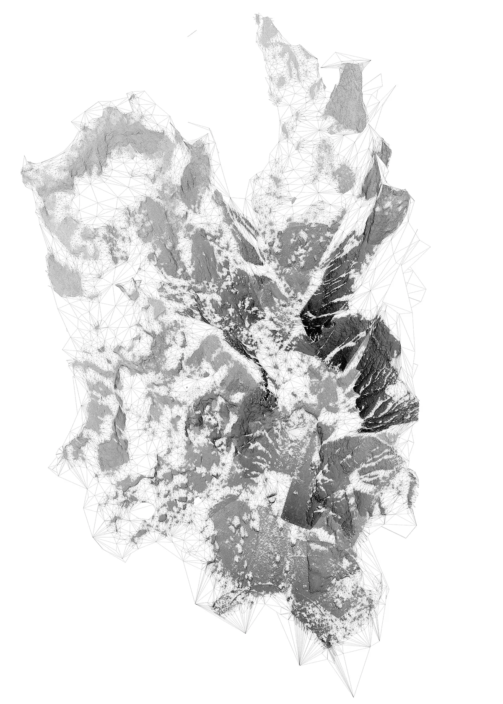
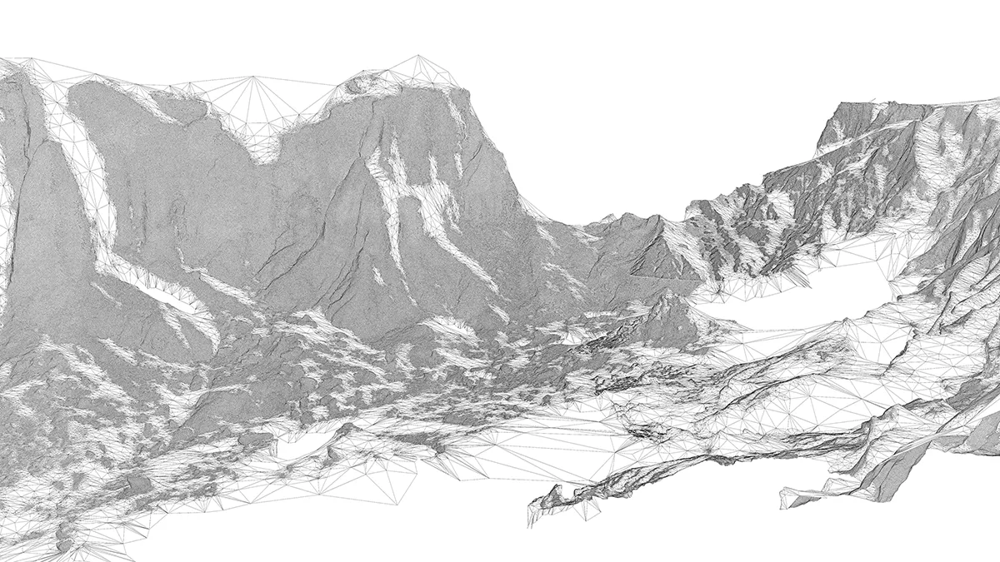
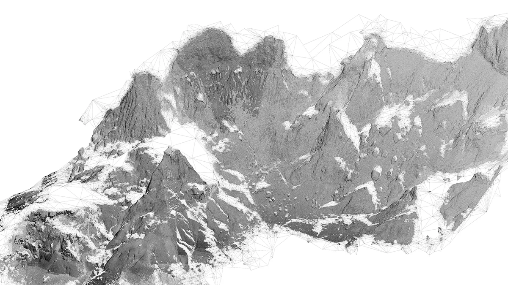
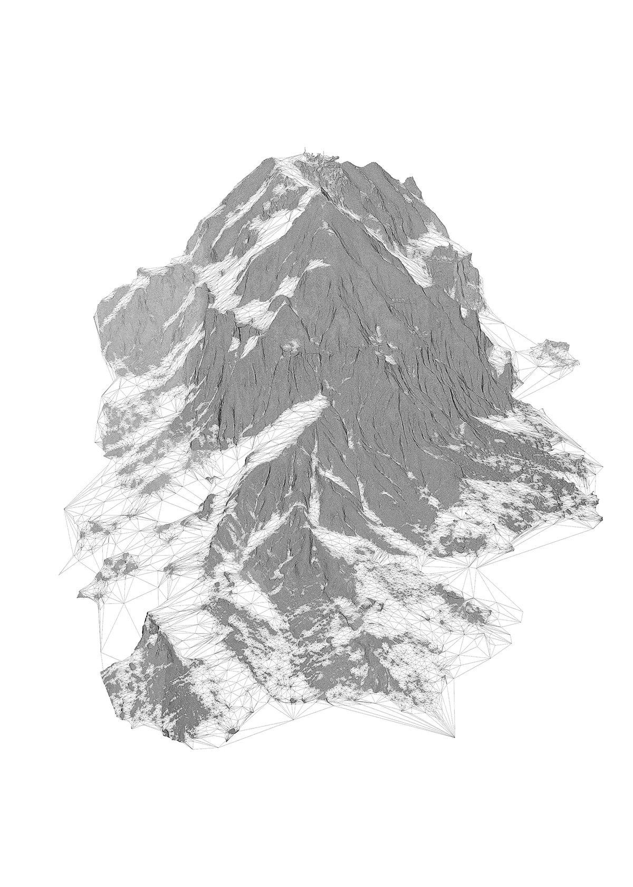

HUILA. CO
(2018)
PORTIONS OF
TERRITORY
As we continue to blur the lines between our physical and digital lives, there appears to be some space available for tracing a "new realism.” This tracing (or action of inscribing) acquires new meanings in the mediations of our contemporary experience. It refers to the artist as an explorer, with the quest of unveiling images in the oversaturated
landscape of images.
Feria del Millón 2017
Feria del Millón 2017
ÁLVARO RODRÍGUEZ, JUAN DAVID FIGUEROA & CARLOS SERRANO



